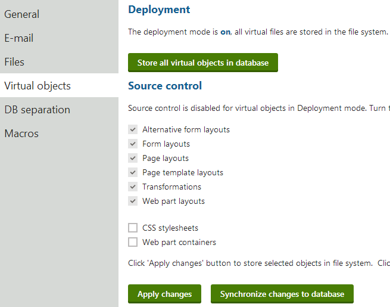

Deployment mode for virtual objects
Kentico provides a way to store virtual objects in the file system in addition to the database. This can be useful if you need to prepare your site for deployment, or if you want to manage the code of objects using a source control system.
Virtual objects that require compilation include the following:
Form layouts (ASCX type)
Page layouts (ASCX type)
Transformations (ASCX type)
To deploy a website to another system:
Open the System application.
Select the Virtual objects tab.
Click Store all virtual objects in file system.
The system saves all virtual objects (alternative form layouts, form layouts, page layouts, page templates, transformations and web part layouts) on your disk.
The target folder is ~/CMSVirtualFiles.
Publish (and compile) the files in Visual Studio. See Publishing projects from Visual Studio for more information.
At this time, you can still edit the code of objects in the Kentico user interface, but any changes will require you to compile the files again.
When deployment mode is OFF:
The storage location of the virtual objects depends on the settings of the Source control options.
When deployment mode is ON:
All objects that require compilation are moved into the file system on the local disk. The target folder is ~/CMSVirtualFiles.
You can edit the code of objects in the user interface. Changes are saved into the files immediately.
You can edit the object files in Visual Studio or another external editor.
To move objects back into the database, click Store all virtual objects in database (deletes the files on the disk).
You can configure the Source control options for objects that do not require compilation (Web part containers and CSS stylesheets).

Enabling deployment mode
Limitations
Do not apply hotfixes while deployment mode is on. Disable deployment mode before you start the hotfix procedure, and re-enable it once the hotfix is applied.
The Staging feature has limited support for synchronizing object code when using deployment mode:
On source servers, staging tasks are generated only if you edit code in the Kentico UI or after you synchronize changes from files into the database.
On target servers, deployment mode must be off if you wish to use incoming staging tasks to update object code.
Error when disabling deployment mode
When disabling deployment mode (returning virtual files to the database), you may encounter the "The directory is not empty." error. This occurs if the web application is currently using some of the virtual files, and cannot delete the content of the CMSVirtualFiles folder as a result.
The error does not affect the functionality of virtual files – the system correctly disables deployment mode and all virtual file data is returned to the database. The only consequence is that the CMSVirtualFiles folder and some of its content remain on your file system. You can try deleting the folder manually at a later point.
Deployment mode on web application projects
If your project was installed as a web application, you need to perform additional steps after enabling deployment mode:
Edit your project in Visual Studio.
Click Show all files at the top of the Solution Explorer.
Right-click the CMSVirtualFiles folder and select Include in Project.
Select the CMSVirtualFiles\WebPartLayouts folder and convert it to the web application format:
Open the Project menu on the main toolbar, select Convert To Web Application and click Yes in the confirmation dialog.
Build the CMSApp project.
The deployed files are now integrated in your web application project. Objects that have code behind files (Web part layouts) are converted to the web application format with designer files.